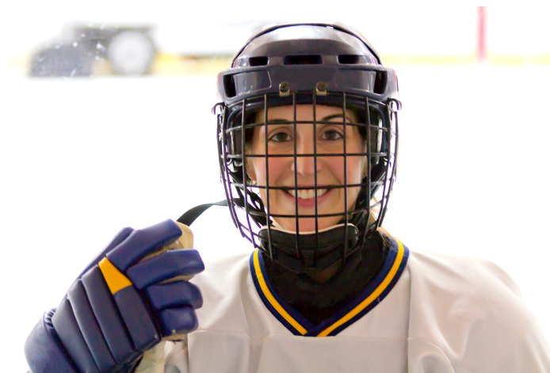

منظور النوع الاجتماعي
المنظور الجنساني ينطلق من أن الفروقات بين الجنسين لها تفسير اجتماعي، ويسلط الضوء على كيف قامت الثقافة بتشكيل وخلق ساحات مختلفة لكل من الجنسين. يبرز المنظور الجنساني أن هناك تفاوتًا كبيرًا فيما يُتوقع من كل جنس داخل الثقافات المختلفة. وتُعد هذه التفاوتات كبيرة لدرجة أن الفروقات البيولوجية لا تكفي لتفسير سبب توقّع أن تكون المرأة أو الرجل بطريقة معينة. علاوة على ذلك، من الصعب تفسير مكانة الجنسين باستخدام البيولوجيا فقط كحجة. فعلى سبيل المثال، يشغل الرجال معظم المناصب القيادية في سوق العمل، رغم أن الفتيات يحصلن عمومًا على درجات أفضل في المدارس، ورغم أن عدد الفتيات في التعليم الجامعي أكبر. كما أن الرياضة أيضًا تتأثر بالتصورات المرتبطة بالجنس.
تُظهر التاريخ أن الرياضة نشأت كأمر ذكوري، أي أنها أُنشئت من قِبل الرجال ولأجلهم. وكان يُنظر إلى ممارسة النساء للرياضة لفترة طويلة على أنها أمر غير لائق. ولكن خلال العقود الأخيرة حدثت تغييرات كبيرة، فقد ازداد عدد الفتيات والنساء اللاتي يمارسن الرياضة بشكل ملحوظ. وحتى عام 1981، كان من الممنوع على النساء المشاركة في سباق فاسالوبِّت. ومع ذلك، لا تزال هناك العديد من الفعاليات الرياضية الكبرى التي تُقام دون مشاركة النساء. على سبيل المثال، سباق طواف فرنسا، حيث بدأ المنظمون يدركون أهمية إشراك النساء، ومنذ عام 2014 تم منح النساء على الأقل فرصة المشاركة في المرحلة الأخيرة من السباق.